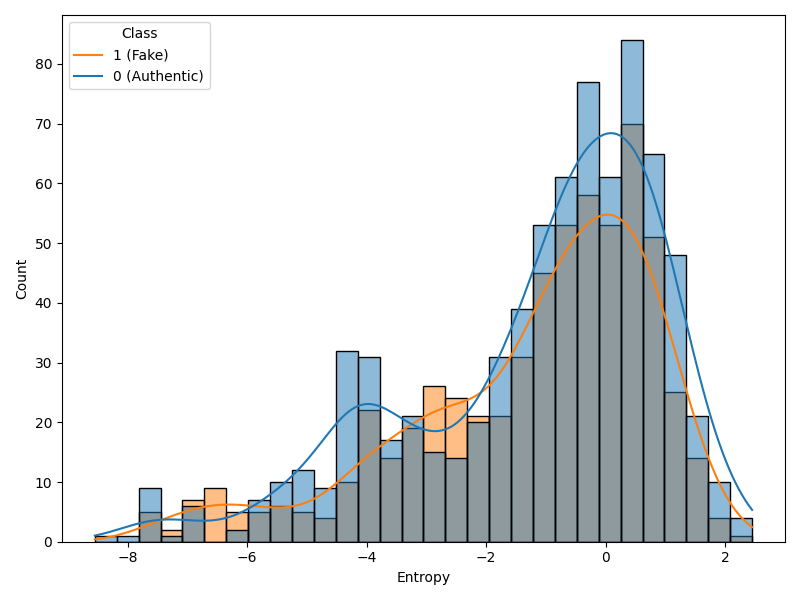
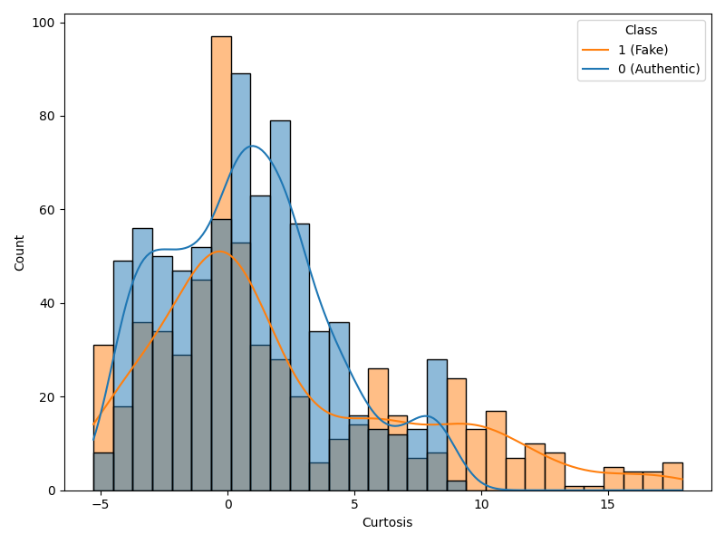
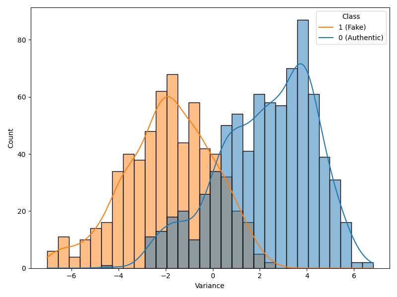
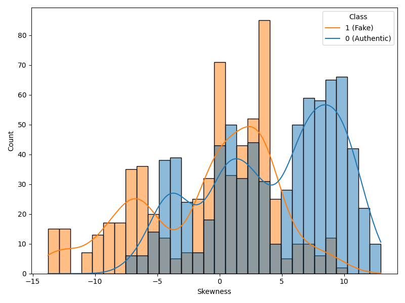
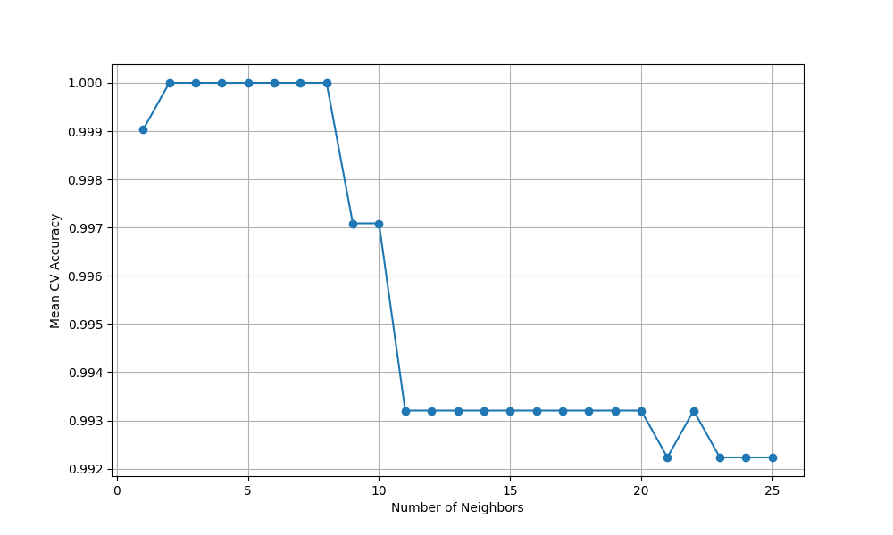
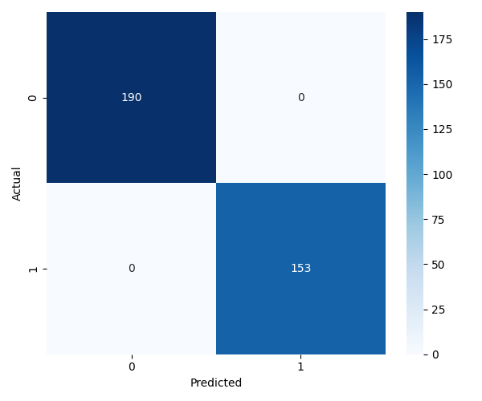

| class | Count | Percentage |
|---|---|---|
| 0 | 762 | 55.5394 |
| 1 | 610 | 44.4606 |
Authentic vs Fake Banknote Classification
Summary
Background information
Counterfeit currency is a global challenge that poses great threat to financial institutions, governments, and even individuals. To combat this, central banks and law enforcement agencies invest billions of dollars annually in anti-counterfeiting measures, such as watermarks, holograms, and security threads. However, while these methods help deter fraud, rapid advancements in printing technology and reproduction techniques have made counterfeiting even more complex and harder to detect (National Research Council 2006).
In Canada, for example, the Department of Justice reports that counterfeit money is one of the most common forms of financial fraud that is continuously adapting to improved security features and law enforcement tactics (Justice Canada 2022). This ongoing challenge highlights the urgent need for more advanced detection methods that can quickly and accurately identify fraudulent banknotes. One of the most promising solutions is the use of automated detection systems powered by image processing and machine learning. By improving pattern recognition and statistical analysis, these models provide high precision, speed, and efficiency, making them a powerful tool in combating financial fraud (Bello and Komolafe 2024).
Research Question
In this project we are trying to answer the question whether a machine learning model, specifically K-Nearest Neighbors (KNN), can effectively classify banknotes as genuine or counterfeit based on numerical image features.
The dataset
The dataset we used for this project is called “Banknote Authentication UCI data”, and it was taken from the UCI Machine Learning Repository. This dataset is designed to distinguish between genuine and counterfeit banknotes using features extracted from their images. It comprises of 1372 individual data points that are characterized by four continuous features: variance, skewness, curtosis, entropy, and class. The target variable “class” is a binary value of 1 (counterfeit banknote) or 0 (genuine banknote). These features were extracted using wavelet transform tools applied to 400x400 pixel grayscale images captured by an industrial camera (Lohweg 2012).
Methods
The Python programming language (Van Rossum and Drake 2009) and the following Python packages were used to perform the analysis:
- pandas (McKinney 2010)
- matplotlib (Hunter 2007)
- seaborn (Waskom 2021)
- Quarto (Allaire et al. 2022)
- click (Pallets Team 2020)
Results
Exploratory Data Analysis & Visualizations
The count between classes in Table 1 is fairly evenly split. Since there’s not a drastic difference between the distribution of classes, we will not do any weighting.

The entropy histograms in Figure 1 have very similar distributions for authentic and fake bills as they both have their modes around the same value and generally follow the same patterns. Since the distributions are very similar, it is very unlikely that entropy is a driving factor in determining authentic or fake bills.

The same can be said for the curtosis histogram (Figure 2) as authentic and fake bills have similar distributions with their modes around the same value as well. Curtosis is also unlikely to be a driving force.

The variance distributions (Figure 3) are very different. Both authentic and fake bills have a bell curve distribution with a similar pattern in terms of distribution, but the position where the distribution occurs differs drastically. This suggests that variance is a very strong driving force in determining whether a bill is authentic or fake.

The skewness histograms (Figure 4) have somewhat different distributions. Fake bills tend to have lower skewness and the mode is noticeably lower for the fake bills compared to the real bills, but the distributions still overlap quite a bit suggesting that skewness is not as big of a driving factor as variance. These histograms will allow us to understand what we should expect with our unknown bill once the bill is identified. We can use these histograms to see if our expectations line up with the unknown bill.
Data Analysis: Creation of the KNN Model
Cross validation
We tried a standard scaler but got better results without it. We decided to use a KNN Model without any scaling.
Parameter optimization

We will run our KNN model on the earliest number of neighbours that results in the highest accuracy on the training set. Figure 5 shows how the number of neighbours affects the accuracy on the training set. Based on this graph we will use 2 neighbours, as it results in the highest training accuracy. This means we can start by experimenting with 2 neighbours in our pipeline and try it on the test set.
Results on the Testing Set

Based on our confusion matrix from Figure 6, we were able to predict 190 authentic banknotes and 153 fake banknotes correctly.
| precision | recall | f1-score | support | |
|---|---|---|---|---|
| 0 | 1 | 1 | 1 | 190 |
| 1 | 1 | 1 | 1 | 153 |
| accuracy | 1 | 1 | 1 | 1 |
| macro avg | 1 | 1 | 1 | 343 |
| weighted avg | 1 | 1 | 1 | 343 |
Table 2 further shows this conclusion. We achieved a score of 100.0%. This means that we have no error, and we are predicting everything right. Every test sample was classified correctly. There are no misclassifications, which implies that the model perfectly distinguishes between the two classes. In conclusion, the classifier achieved 100.0% accuracy on the test set, with perfect precision, recall, and F1-scores for both classes.
Discussion
Analysis of Results
The classifier perfectly predicted all 190 real banknotes and 153 fake banknotes in the test set. This is not what we expected to find. While we did expect our model to do well since our input variables likely play a major role in detecting forged banknotes, we did not expect it to perfectly predict every banknote in the test set.
However, upon further research, this model is fairly consistent with other models. A Gaussian process classifier was able to get 100% accuracy on both the training and test set with only 500 training samples (Grosse et al. 2018). A different model using convex optimzation on graphs also managed to achieve an average testing accuracy of 99.03% over 100 randomly generated training sets (Merkurjev et al. 2015).
Future Considerations
This result suggests that our current model is identifying all the patterns in the dataset and is able to predict whether or not a banknote is forged or not with 100.0% accuracy. However, this model still needs more testing. We could be overfitting on our available data or have a data leakage. We added a data validation check that detects anomalous correlations between the target variable compared to the explanatory variables to minimize potential data leakage, but this may not be enough to prevent it. In terms of overfitting, our test set may also not capture all the patterns of a banknote the model might encounter, as it only has 343 samples. This test could have failed to include some rare or outlier patterns the model may encounter if it were tested on a different dataset. It is possible that the test set may be contaminated in a way that was not accounted for, leading the model to have already seen the test set during training. It may even be the case that our entire dataset is too small of a sample, which makes the dataset not be representative of the real world. This could potentially cause our model to perform poorly on unseen data.
This analysis raises several potential future questions that could evaluate how this model would fare in real world scenarios:
- Would our model still be generalizable for larger or more complex datasets or would it lead to lower accuracy?
- Which of the input features between variance, skewness, kurtosis, and entropy are the most important for authenticating banknotes and by how much?**
- Is there covariance between the input features? Does this covariance make it easier to detect fake banknotes?**
- What are the patterns that make a counterfeit banknote stand out from a genuine banknote? Could a forged banknote be designed to avoid these patterns and not be detected by the classification model?
References
Allaire, J. J., Charles Teague, Carlos Scheidegger, Yihui Xie, and Christophe Dervieux. 2022. “Quarto.” https://doi.org/10.5281/zenodo.5960048.
Bello, Oluwabusayo Adijat, and Olufemi Komolafe. 2024. “Artificial Intelligence in Fraud Prevention: Exploring Techniques and Applications Challenges and Opportunities.” Computer Science & IT Research Journal. https://api.semanticscholar.org/CorpusID:270808704.
Grosse, Kathrin et al. 2018. “Killing Four Birds with One Gaussian Process: Analyzing Test-Time Attack Vectors on Classification.” arXiv: Cryptography and Security. https://api.semanticscholar.org/CorpusID:67856763.
Hunter, J. D. 2007. “Matplotlib: A 2D Graphics Environment.” Computing in Science & Engineering 9 (3): 90–95. https://doi.org/10.1109/MCSE.2007.55.
Justice Canada. 2022. “The Links Between Substance Abuse and Crime in Canada.” https://www.justice.gc.ca/eng/rp-pr/csj-sjc/crime/rr02_3/p33.html.
Lohweg, Volker. 2012. “Banknote Authentication.” https://doi.org/10.24432/C55P57.
McKinney, Wes. 2010. “Data Structures for Statistical Computing in Python.” In Proceedings of the 9th Python in Science Conference, edited by Stéfan van der Walt and Jarrod Millman, =51–56.
Merkurjev, Ekaterina et al. 2015. “Global Binary Optimization on Graphs for Classification of High-Dimensional Data.” Journal of Mathematical Imaging and Vision 52: 414–35. https://api.semanticscholar.org/CorpusID:7832907.
National Research Council. 2006. Is That Real? Identification and Assessment of the Counterfeiting Threat for u.s. Banknotes. The National Academies Press. https://nap.nationalacademies.org/catalog/11638/is-that-real-identification-and-assessment-of-the-counterfeiting-threat.
Pallets Team. 2020. Click. https://click.palletsprojects.com/.
Van Rossum, Guido, and Fred L. Drake. 2009. Python 3 Reference Manual. Scotts Valley, CA: CreateSpace.
Waskom, Michael L. 2021. “Seaborn: Statistical Data Visualization.” Journal of Open Source Software 6 (60): 3021. https://doi.org/10.21105/joss.03021.